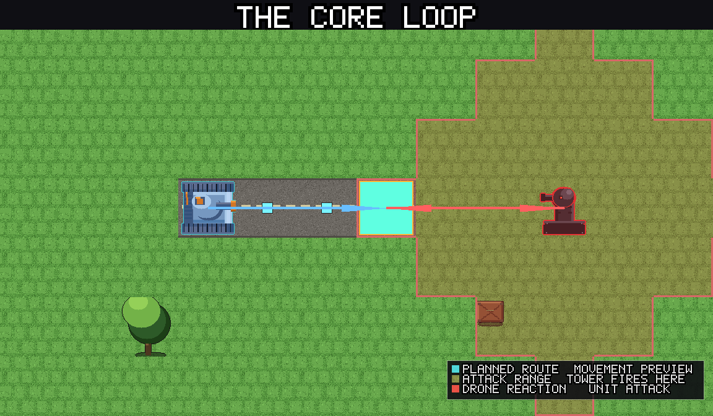
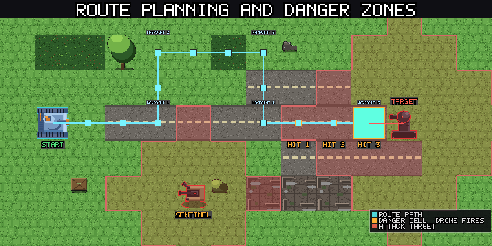
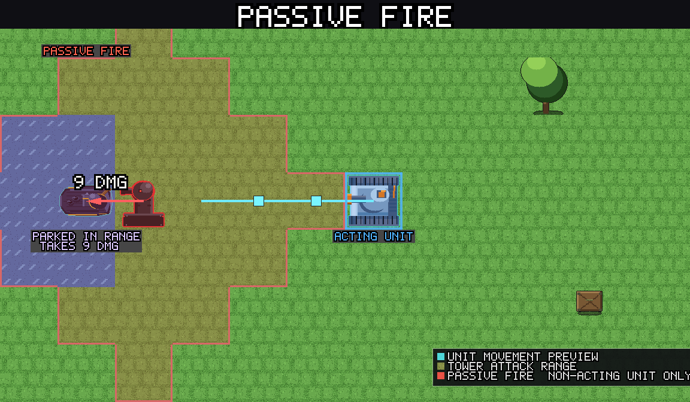
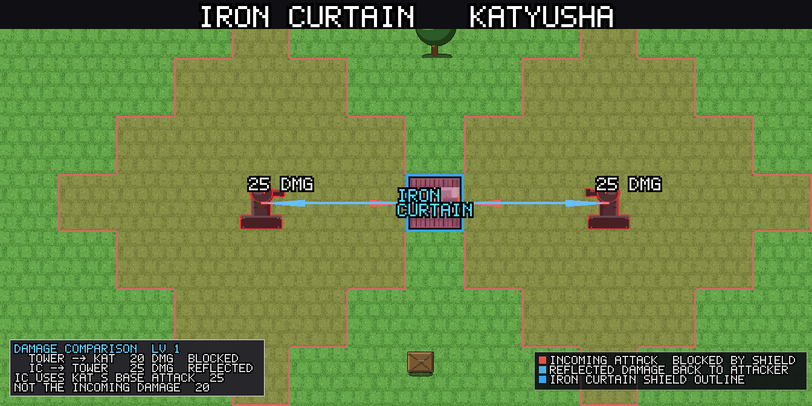
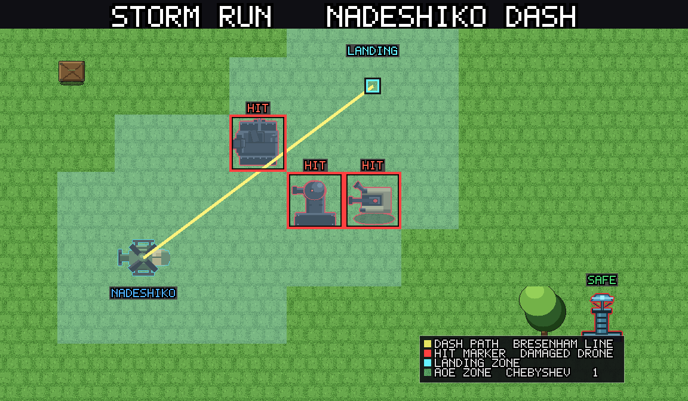
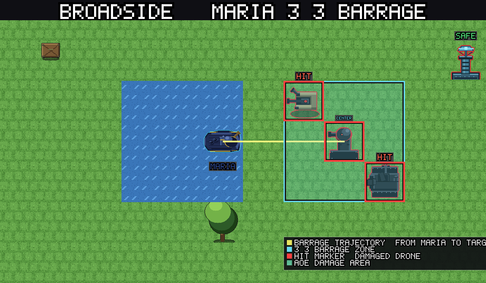

title: Getting started description: A quick introduction to Panzer Island for new players: how movement works, what to expect, and the handful of principles that carry you through Chapter 1.
Getting started¶
Panzer Island plays differently from most turn-based strategy games. This guide covers the core ideas you need to get through Chapter 1, without going into the mechanical depth of the Reactive Turns guide.
The one thing to understand first¶
You have no fixed movement range. Your units can reach any walkable cell on the map in a single action. The constraint is not distance. It is the damage you absorb along the way.
Every step you take triggers a reaction from nearby drones. A guard tower fires every time you step into its range. A patrol chases you. A sentinel that was dormant wakes up because another drone fired nearby. Distance costs health, not actions.
This changes how you think about the map. The question is never "can I reach that tile?" It is "how much fire do I take getting there, and is it worth it?"

The route preview¶
Before you commit to a move, the game shows you a route preview. Tiles highlighted in orange are dangerous: at least one drone will fire on your unit if it crosses them. The preview also shows a damage estimate for the full route and outlines any drones that would be alerted by your movement.
Use it. Always check the preview before moving into an unknown area.

Your three units¶
You start Chapter 1 with Katyusha. Nadeshiko and Maria join in stages 2 and 3.
Katyusha is your tank. She takes hits well and hits back hard. Put her in front. When drones are firing at her and she has Iron Curtain ready, activate it: she will block incoming fire and counter-attack up to two drones that fire on her while the shield holds.
Nadeshiko flies. She crosses water, mountains, and any terrain the other units cannot enter. She is fragile, but her Storm Run limit break can cut through a cluster of drones in one move. Use her to reach isolated drones, flank positions, or deliver a dash through a tightly packed formation.
Maria requires water tiles to move, but her range and firepower make her strong in any coastal stage. Park her on water within range of a priority target and let her work. Her Broadside limit break fires a 3x3 barrage and suppresses drone counterfire while it lands. It clears formations cleanly.
See Your Units for full stats, skill tracks, and tactical notes on each unit.
Spreading the damage¶
Drones fire at the unit that moved or attacked. At the end of every action, however, any drone that did not react will fire at your other units if they are in range. Leaving Nadeshiko parked next to a cruiser while Katyusha moves will cost Nadeshiko health.
Rotate which unit advances so no single unit absorbs all the fire. Keep units out of drone range when they are not acting.

Limit breaks¶
Each unit has a limit gauge that fills as they deal and take damage (+10 per hit). When full, you can use a limit break instead of a normal action. The gauge resets after triggering but recharges from the next damage event; there is no per-stage cap.
Iron Curtain (Katyusha): blocks incoming damage and counter-attacks drones that fire on her. Use it when pushing into a cluster of guard towers or a fortified choke point.

Storm Run (Nadeshiko): dashes in a straight line and damages every drone adjacent to the path. Drone reactions resolve after the dash completes. Use it to clear a fortified position or reach a high-value target deep in enemy territory.

Broadside (Maria): 3x3 barrage, no drone counterfire. Use it to clear a packed area or break a defensive formation that is too costly to attack directly.

In a multi-sector stage, consider saving a limit break for the later sector rather than spending it early.
Skills¶
At levels 4, 7, 14, and 17 the game offers a skill choice. Each unit has two tracks; you pick one stack of either track at each choice event. By level 17, each track has exactly 2 stacks.
Skills enhance limit breaks, not base stats. Katyusha's tracks raise her Iron Curtain reflect cap and counter damage. Nadeshiko's tracks extend Storm Run range and damage. Maria's tracks extend Broadside range and damage.
Chapter 1 takes you to roughly level 10, so you will see your first two choices before the demo ends. There is no wrong pick; both tracks for each unit are useful.
See Skill Builds for sequencing advice, or Your Units for the full track details.
Priority targets¶
Not all drones are equal. Some amplify the threat of everything around them:
Relay nodes increase the attack range of nearby drones while alive. If a guard tower seems to be hitting you from an unusual distance, look for a relay node. Destroy it first: its death immediately reverts the boosted drones.
Spotters mark units in range, increasing damage they take from other drones. Destroying a spotter reduces incoming damage significantly.
Detonators pursue the nearest unit and self-destruct on contact, dealing area damage. They have very low HP and die in one hit from almost any attack. Kill them the moment they appear, before they close the gap.
See the Drone Reference for stats and counter advice on every drone type.
Multi-sector stages¶
Some stages are split into sectors. You advance to the next sector after clearing the current one. Your units carry their current HP and limit gauges into the next sector, but destroyed units do not return.
Position your units carefully before the sector transition. HP you carry forward is HP you did not waste.
When you are stuck¶
If a stage is defeating you repeatedly, the problem is almost always one of three things.
Your units are too low level. Higher levels mean more HP, more attack, and more defense against the same drones. Replaying an earlier stage to earn XP is not cheating; it is the intended recovery loop. A stage that felt impossible at level 5 is often straightforward at level 8.
The route is wrong. Most deaths happen because one or two cells on the route are generating most of the damage. Look at which cell the route preview shows as the most dangerous, not the total number. Can a waypoint go around it? Can Nadeshiko fly over the obstacle to find a cleaner path? Can you approach from a different side of the map?
The order of operations is wrong. If you are dying pushing into the main cluster, try clearing one or two flanking drones first to reduce the fire during the main push. A smaller number of drones firing at Katyusha on her way in is often the difference between surviving and not.
Skill choices rarely block Chapter 1 progression. If you are stuck before level 7, the issue is routing or level, not builds.
The core principles¶
- Read the route preview before committing to a move.
- Rotate which unit advances to spread the damage.
- Destroy relay nodes and spotters before engaging the drones they support.
- Save a limit break for the start of a difficult sector.
- Keep fragile units (Nadeshiko) out of drone range when they are not acting.
Other guides¶
Your Units Stats, limit breaks, and skill tracks for Katyusha, Nadeshiko, and Maria. Covers base values at every level and what each unit is and is not capable of.
Drone Reference Stats, behaviors, counters, and tactical notes for every drone type in the game.
Stage Objectives What each objective type requires, what fails the sector, and basic tactics.
Advanced Tactics Reading multi-step routes, deliberate damage spreading, using limit breaks defensively, and sector transition positioning.
Skill Builds How to sequence your skill picks for each unit. Relevant starting at level 4.
Reactive Turns The full mechanical breakdown of how the reactive turn system works. Return to this after Chapter 1.